Proyecciones de Tórax y Abdomen
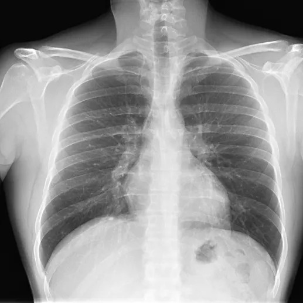
Tórax PA
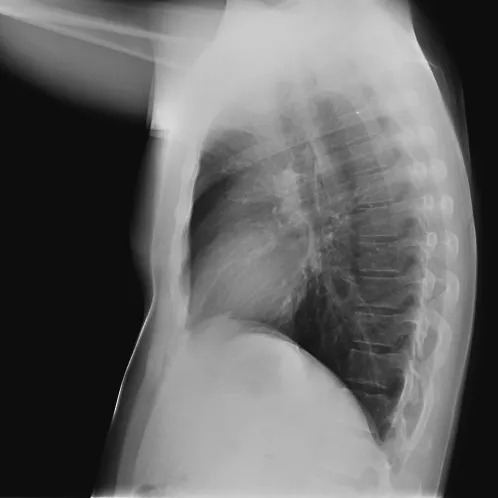
Tórax Lateral
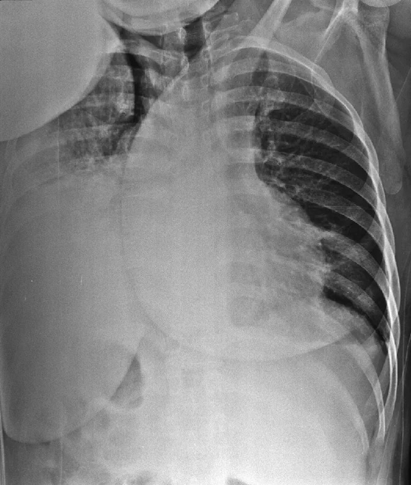
Tórax AP Decúbito Lateral
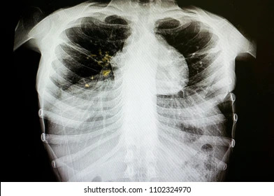
Tórax AP Hiperlordótica
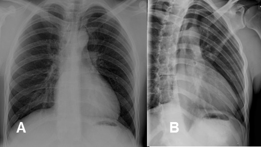
Parrilla Costal (Alta / Baja / Oblicua)
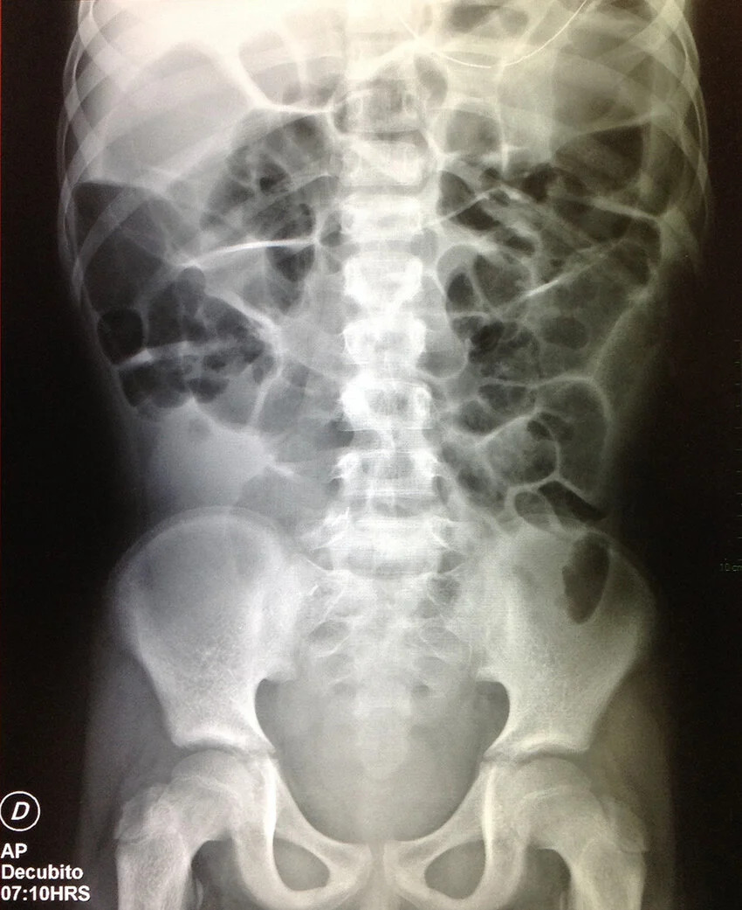
Abdomen AP (Decúbito Supino / Bipedestación)
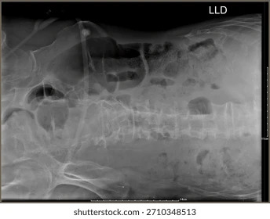
Abdomen AP en Decúbito Lateral Izquierdo
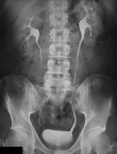
Renal Simple AP
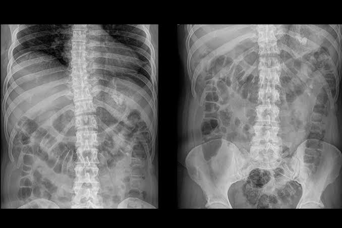
Vesical Simple AP
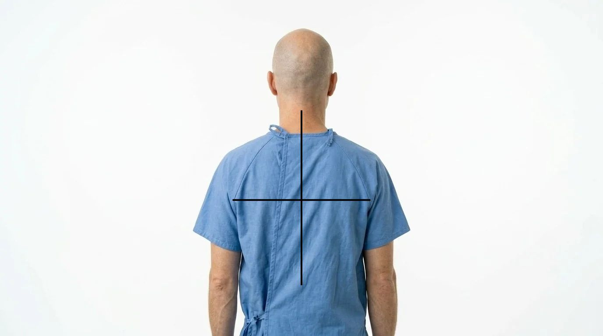
Posicionamiento PacienteTórax Posteroanterior (PA)
Cadenas, collares, ropa con broches/cierres/estampados metálicos, sostén, etc.
Desnudar tórax (usar bata de examen abierta hacia atrás).
35 x 43 cm (Longitudinal) ó 35 x 35 cm.
180 cm (1.80 metros para evitar magnificación cardíaca).
Sí (Estativo mural).
0° (Perpendicular al RI).
Longitudinal sobre Plano Sagital Medio (PSM). Transversal a nivel del vértice inferior de la escápula (aprox. T7 / Línea Media Clavicular).
Bipedestación, pies levemente separados. Dorso de manos en caderas, codos y hombros rotados hacia adelante para desproyectar escápulas. PSM alineado con el estativo.
110 - 125 kV
2 - 4 mAs (Técnica de alto kV)
- Apnea en 2da inspiración profunda máxima.
- Colimación estricta a 4 bordes.
- Sin moverse.
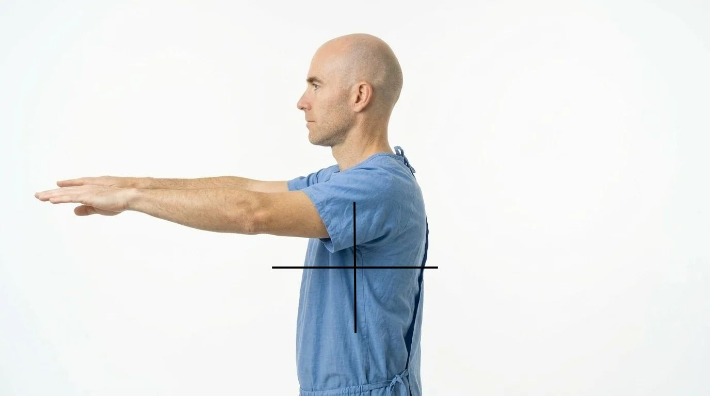
Posicionamiento PacienteTórax Lateral (Izquierdo / Derecho)
Elementos metálicos en tórax, collares, sostén, etc.
Desnudar tórax (bata de examen).
35 x 43 cm (Longitudinal) ó 35 x 35 cm.
180 cm (1.80 metros).
Sí (Estativo mural).
0° (Perpendicular al RI).
Longitudinal sobre Plano Medio Coronal. Transversal a nivel del vértice inferior de la escápula (T7).
Bipedestación. Lado izquierdo apoyado contra estativo. Brazos elevados sobre la cabeza con codos hacia adelante. Sin rotación.
115 - 125 kV
7 - 12 mAs
- Apnea inspiratoria profunda durante el disparo.
- Sin moverse.
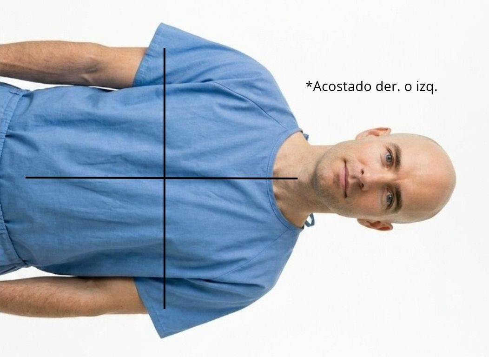
Posicionamiento PacienteTórax AP Decúbito Lateral (Con Rayo Horizontal)
Objetos metálicos en región torácica y sostén.
Desnudar tórax (bata de examen).
35 x 43 cm (Transversal respecto al paciente, longitudinal al haz).
180 cm (1.80 metros).
Sí (Estativo mural o parrilla antidifusora portátil).
0° Horizontal (Perpendicular al RI vertical).
En PSM a nivel de T7 (7 a 8 cm bajo la escotadura yugular).
Decúbito lateral (lado afectado hacia abajo para derrame pleural; lado sano hacia abajo para neumotórax) sobre camilla radiotransparente, manteniendo la posición 5 minutos previos. Brazos elevados sobre la cabeza.
110 - 125 kV
3 - 6 mAs
- Apnea en inspiración profunda.
- Señalizar claramente el lado anatómico apoyado.
- Sin moverse.
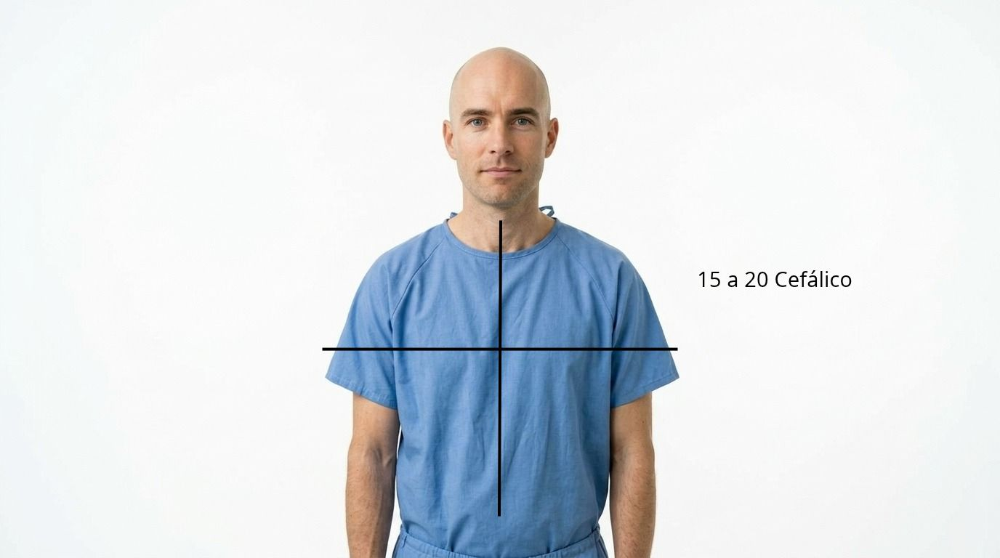
Posicionamiento PacienteTórax AP Hiperlordótica (Vértices Pulmonares)
Collares, cadenas y elementos metálicos en tórax y cuello.
Desnudar tórax (bata de examen).
35 x 43 cm (Longitudinal) ó 35 x 35 cm.
180 cm.
Sí (Estativo mural).
0° Horizontal (si el paciente adopta posición lordótica) ó 15° a 20° cefálico (si el paciente no puede arquearse).
Sobre PSM a nivel de la parte media del esternón (aprox. 9 cm bajo la escotadura yugular).
Bipedestación a 30 cm delante del estativo, inclinando el tronco hacia atrás hasta apoyar hombros, cuello y nuca contra el estativo. Dorso de manos en caderas con hombros hacia adelante.
110 - 125 kV
3 - 5 mAs
- Apnea en 2da inspiración máxima para desproyectar clavículas por encima de los ápices pulmonares.
- Sin moverse.
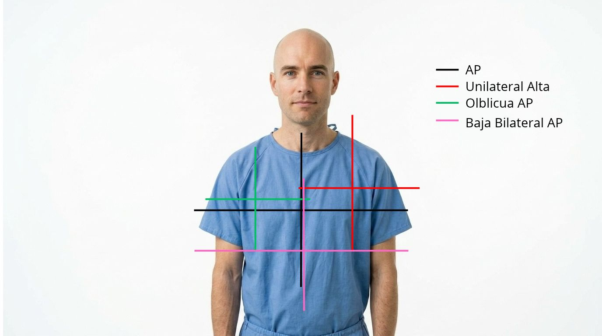
Posicionamiento PacienteParrilla Costal (Alta / Baja / Oblicua)
Elementos metálicos, ropa con botones o cierres en tórax y abdomen alto.
Desnudar tórax (bata de examen).
35 x 43 cm (Longitudinal).
100 cm (1 metro).
Sí (Estativo mural o mesa).
0° (Perpendicular al RI).
Costillas Altas (Supra-diafragmáticas) a nivel de T7. Costillas Bajas (Infra-diafragmáticas) a nivel de T10 / reborde costal inferior, centrando en el hemitórax afectado.
Bipedestación (costillas altas) o Decúbito Supino (costillas bajas). Proyección AP/PA y Oblicua Anterior/Posterior (45°) acercando la zona dolorosa al receptor. Marcar punto de dolor si corresponde.
65 - 75 kV (Altas) / 70 - 80 kV (Bajas)
12 - 20 mAs (Altas) / 20 - 30 mAs (Bajas)
- Costillas Altas en apnea de inspiración profunda.
- Costillas Bajas en apnea de espiración completa (eleva el diafragma).
- Sin moverse.
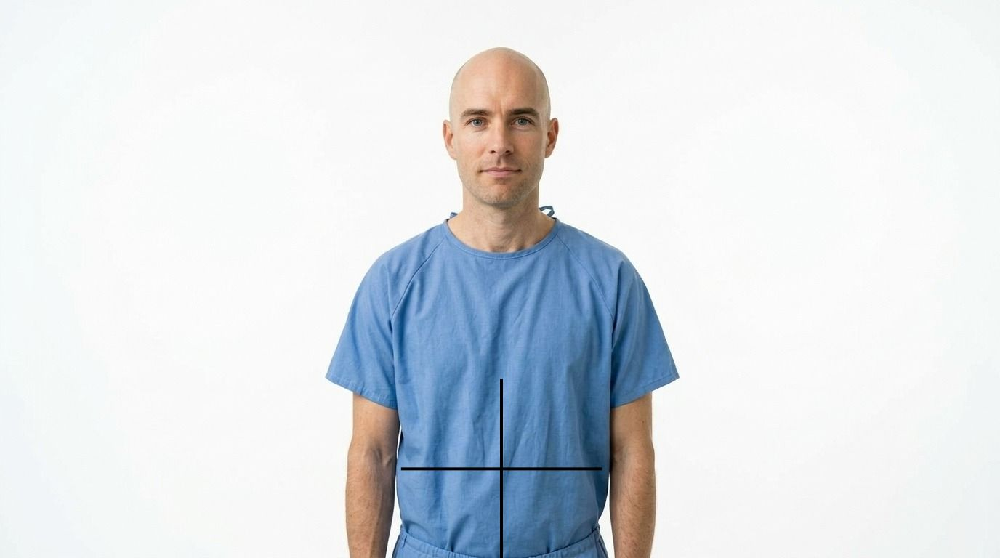
Posicionamiento PacienteAbdomen AP (Decúbito Supino / Bipedestación)
Cinturones, botones metálicos, cierres, piercings umbilicales/pélvicos, joyas abdominales.
Bata de examen.
35 x 43 cm (Longitudinal).
100 cm (1 metro).
Sí (Camilla o estativo mural).
0° (Perpendicular al RI).
Longitudinal en PSM. Transversal en punto medio entre 2 traveses de dedo sobre apéndice xifoides y sínfisis púbica (nivel de crestas ilíacas / L4-L5; en bipedestación 5 cm más arriba para incluir cúpulas diafragmáticas).
Decúbito supino o bipedestación (mínimo 5 min de pie previo al disparo). Brazos a los lados, piernas levemente separadas, sin rotación pelviana.
70 - 80 kV
25 - 40 mAs
- Apnea Espiratoria.
- Colimación estricta a paredes abdominales laterales.
- Sin moverse.
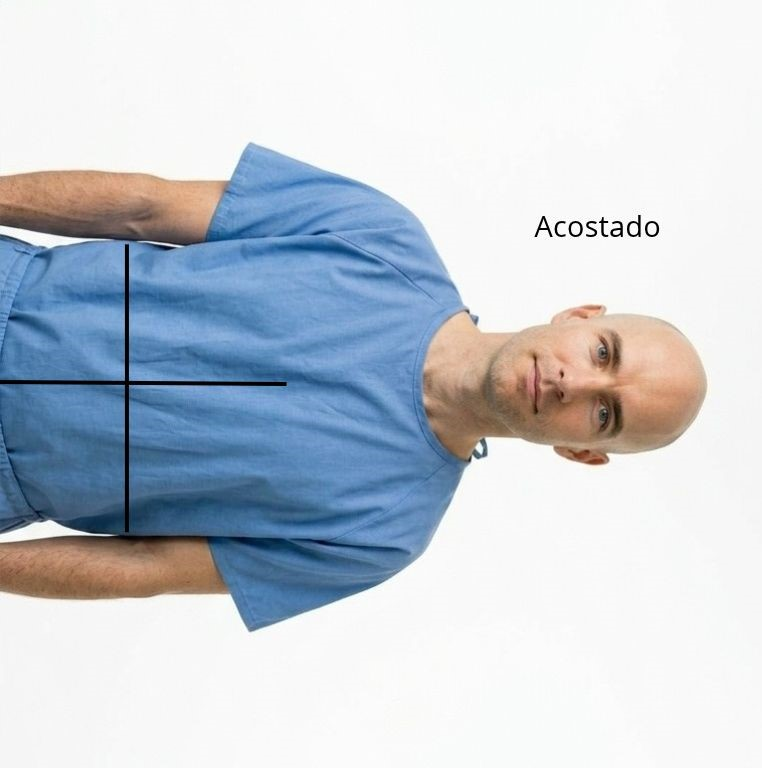
Posicionamiento PacienteAbdomen AP en Decúbito Lateral Izquierdo
Objetos metálicos, botones, cierres en región abdominal y pélvica.
Bata de examen.
35 x 43 cm (Transversal al paciente, longitudinal al haz).
100 cm (1 metro).
Sí (Estativo mural con rayo horizontal).
0° Horizontal (Perpendicular al RI).
Sobre PSM, aprox. 5 cm por encima de las crestas ilíacas (debe incluir el hemidiafragma derecho para pesquisa de neumoperitoneo).
Decúbito lateral izquierdo estricto (mínimo 5 a 10 minutos en esta posición antes de irradiar). Rodillas semiflectadas para estabilidad y brazos elevados sobre la cabeza.
70 - 80 kV
25 - 40 mAs
- Apnea Espiratoria.
- Permite visualizar niveles hidroaéreos y aire libre intraperitoneal sobre el hígado.
- Sin moverse.
Renal Simple AP
Objetos metálicos, botones, cierres.
Bata de examen.
35 x 43 cm (Longitudinal).
100 cm (1 metro).
Sí (Camilla).
0° (Perpendicular al RI).
Longitudinal en PSM. Transversal en punto medio entre 5 traveses de dedo sobre apéndice xifoides y sínfisis púbica.
Decúbito dorsal (supino), brazos al lado del cuerpo. Preparación previa requerida (ayuno/catárticos según protocolo institucional).
70 - 80 kV
25 - 40 mAs
- Apnea Espiratoria durante el disparo.
- Sin moverse.
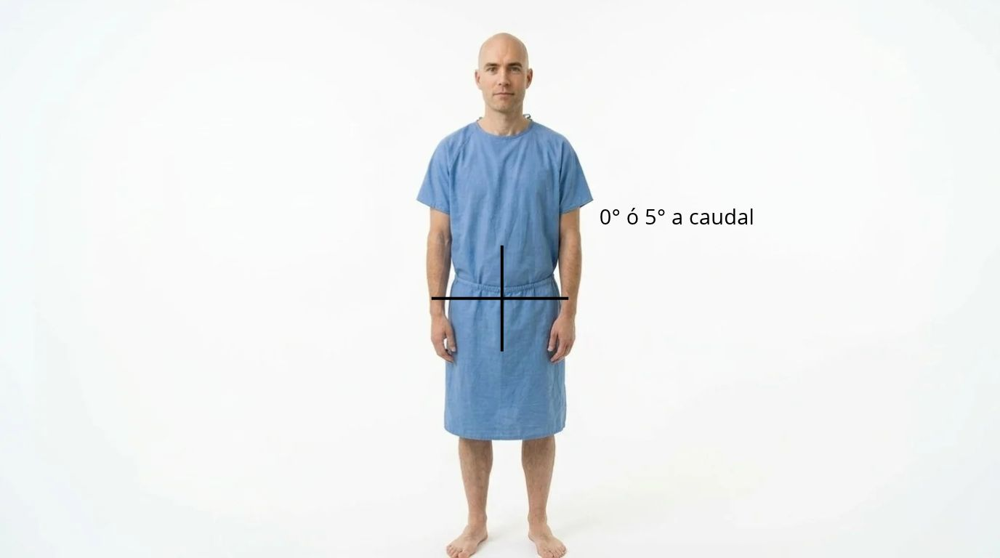
Posicionamiento PacienteVesical Simple AP
Botones, cierres, joyas pélvicas.
Bata de examen.
18 x 24 cm ó 24 x 30 cm (Longitudinal).
100 cm (1 metro).
Sí (Camilla).
0° (Perpendicular) ó 5° a caudal.
Longitudinal en PSM, 2 traveses de dedo por sobre la sínfisis púbica.
Decúbito dorsal (supino), brazos al lado del cuerpo.
70 - 80 kV
20 - 32 mAs
- Apnea Espiratoria durante el disparo.
- Sin moverse.